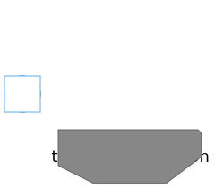
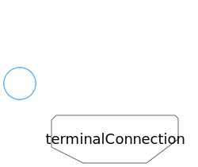
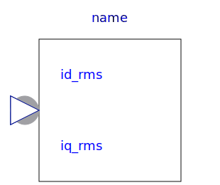

Utilities for quasi static fundamental wave machines
| Name | Description |
|---|---|
|
|
Voltage-Frequency-Controller |
|  TerminalBox | Terminal box Y/D-connection |
|  MultiTerminalBox | Terminal box Y/D-connection |
|
|
Rheostat which is shortened after a given time |
|  CurrentController | Current controller |
|
|
Y-D-switch |